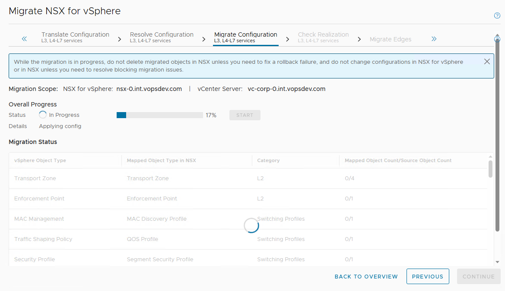

迁移 NSX-V 到 NSX-T: Migration Coordinator 方案 - 2 迁移
本文将完成使用 Migration Coordinator 基于用户自定义拓扑迁移现有的 NSX-V 到 NSX-T 环境的剩余部分
启动 Migration Coordinator 服务
默认 MC 服务并没有启动, 使用 ssh 登入 NSX-T Manager, 执行命令 start service migration-coordinator 将其启动起来. 然后就可以在 NSX-T Manager 的 Web UI 上访问了.
选择 "User Defined Topology"
选择迁移模式 "Complete Migration"
将 NSX-V 环境注册到 NSX-T
添加 vCenter 和 NSX-V 的认证信息, 添加到 NSX-T 环境中
Migration Coordinator 流程 - 导入拓扑
导入 NSX-V 拓扑
然后可以查看导入的拓扑, 确认没有问题
Migration Coordinator 流程 - 转化二层
然后转化二层:
转化完会检测配置冲突, 有冲突需要用户手工消解的部分会提示:
大部分情况下使用默认的冲突消解建议即可, 这里 Migrate or skip VLAN DVPGs missing segments 部分选择了 skip. 因为连接到物理世界的 segment 已经提前创建出来, 并且这个环境里其他的 DVPG 并不需要在 NSX-T 中使用
完成所有的冲突消解:

然后就可以进行二层迁移:
检查二层迁移结果:
二层迁移完成之后, transport node uplink profile, segment 之类都会自动创建出来.
手工迁移负载均衡器配置
接着我们可以从 migration coordinator 中退出来, 手工迁移负载均衡器相关的配置.
首先在 corp-t1-standalone 添加 service port 连接到 segment B:
为 corp-t1-standalone 添加默认路由:
将 segment C 连接到 Tier-1 gateway (corp-t1-ext) 并设置网关
创建外部负载均衡器, 连接到 Tier-1 gateway (corp-t1-ext)
创建内部负载均衡器, 连接到 Tier-1 gateway (corp-t1-standalone)
按照原有环境的配置, 创建 server pools, monitors, application profiles, application rules 和 virtual servers. 这里不再一一详细列出
Migration Coordinator 流程 - 转化三到七层
接着回到 migration coordinator 界面, 继续三到七层的配置. 首先是定义拓扑, 选择 "Select a Tier-0/Tier-1 Gateway for each entity that needs to be migrated":
将 nsx-ldr 对应到 corp-t0-gw, 这是因为我们需要将 segment A 和 segment B 连接到 Tier-0 上. 将 nsx-esg 对应到 corp-t0-gw, 这是因为我们需要将 IPSec VPN 的配置迁移过去. nsx-internal-lb 不设置映射, 因为我们已经手动配置好了负载均衡器.
确认不迁移未设置映射的 ESG
然后转化三到七层配置:
和二层类似, 用户也需要手工消解三到七层配置转化中发现的冲突:
非建议选项: 跳过 vIDM, 这个环境里面不需要
其他基本上都可以选择建议的配置, 完成所有冲突消解:
开始迁移三到七层配置:

完成后检查三到七层配置:
此时 segment A 和 B 会连接到 Tier-0 gateway, IPSec VPN 的配置也会产生. 到此为止, 现存 NSX-V 环境的流量还不会受到影响
Migration Coordinator 流程 - 迁移 Edge
接着开始迁移 Edge. 从这个阶段开始, 现存环境的流量将开始中断.
迁移完 Edge 后, 就可以断开 NSX-V 环境 nsx-esg 的网络连接, 并修正 NSX-T VLAN segment 的 VLAN ID 了.
Migration Coordinator 流程 - 迁移 Host
根据需要选择主机迁移的并行度
开始迁移主机, 并等待迁移结束
迁移时会先卸载主机上的 NSX-V 模块, 然后再安装 NSX-T 模块, 进行主机准备. 而且只有在迁移主机时, 才会将其上运行的虚拟机的 vNIC 重新连接到 NSX-T 的 segment, 因此虚拟机东西向流量完全恢复要等到所有主机迁移完成. 根据主机数量的多少和并行度的设置, 这个过程可能会长达几十分钟甚至数小时.
手工修复环境
最后手工修复剩下的部分
- 刷新物理路由器上 NSX-T 外部地址的 ARP 缓存条目. 因为我们保留了相同的外部地址, 物理路由器上可能还留着 NSX-V 对应的条目. 可以触发 NSX-T Tier-0 gateway 的 failover 来发送 GARP 刷新缓存或者直接在物理路由器上清除 ARP 缓存
- 修复 corp-t0-gw 上 bgp 邻居配置中的更新源地址, 此时 VPN tunnel 正常应该已经起来了, 使用 VPN tunnel 地址作为更新源
- 检查 MC 自动产生的迁移对象, 如果不需要的可以删除
最后检查迁移完成后的环境, 确保路由/负载均衡器/VPN等基本功能都没有问题:
最后清除剩下的 NSX-V 环境.